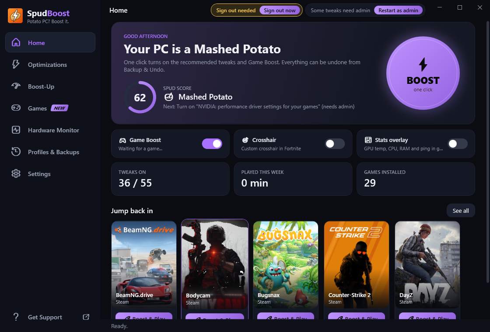
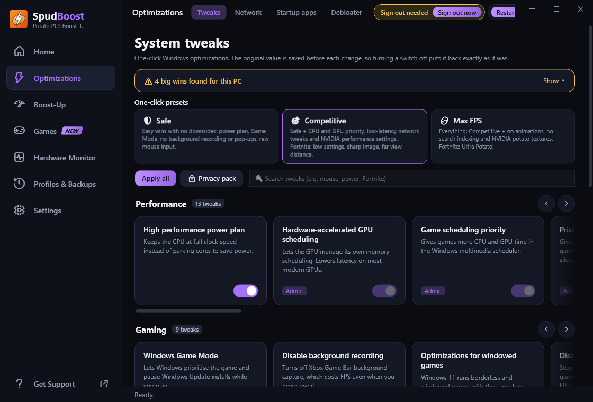
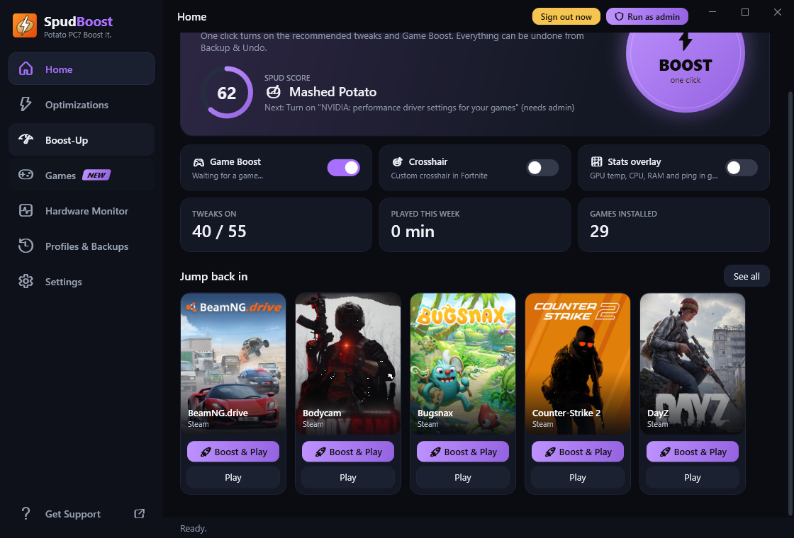

Potato PC?
Boost it.
SpudBoost turns on the Windows and game tweaks that actually raise your FPS and lower your ping, in one click. Every change can be undone.

Everything your PC needs for games
One app instead of ten guides. Each switch explains what it does, and turning it off puts things back exactly as they were.
One-click Boost
Your Spud Score shows how game-ready your PC is. Hit Boost to turn on the recommended tweaks.
Game Boost
When a game starts, it gets top CPU priority, background apps get lowered, and junk apps get closed until you're done.
Lower ping
Network tweaks for fewer lag spikes, fast DNS, and a ping test that finds your best Fortnite region.
Game library
All your Steam, Epic, Roblox and Minecraft games, with Boost & Play and tweaks made for each one.
Custom crosshair
A Fortnite crosshair overlay that changes per weapon, hides while you aim, and never touches the game.
Cleaner & RAM boost
Clear junk files and caches, and free up RAM automatically when a game starts running low.
Privacy pack
Turn off telemetry, ads, Copilot, Recall, activity history and more in one click.
Monitor & overlay
Live CPU, GPU, temps and ping, an in-game stats overlay, play-time tracking and heat warnings.
Profiles
Save your whole setup, switch between profiles, and share them as a file your friends can double-click.
Clean, fast, and easy to use
No walls of settings. Big switches, clear descriptions and a dark theme you can colour your way.


Boosted in under a minute
No setup, no account.
Download & install
Grab the installer above. SpudBoost keeps itself up to date after that.
Pick a preset
Safe, Competitive or Max FPS. Or switch tweaks on one by one.
Play
Launch your game from the Library and Game Boost takes care of the rest.
Safe by design
Tweaking Windows should never feel risky. Here's how SpudBoost keeps your PC safe.
- Full undoThe original value is saved before every change. Turn a switch off to put it back.
- Restore pointCreates a Windows restore point before the first tweak.
- No game hackingNever injects code or reads game memory. It only changes settings Windows and games already allow.
- Protected appsWindows, security and anti-cheat processes can never be closed or removed.
Antivirus warning?
SpudBoost is new and not code-signed yet, so Windows SmartScreen or some antivirus apps may warn you. That's a false positive. If Windows says "Windows protected your PC", click More info → Run anyway.
Only download SpudBoost from this site or the official GitHub page. To check your download, run Get-FileHash in PowerShell and compare it with the SHA-256 listed for that version on GitHub.
Questions
Still stuck? Ask in the Discord.
Is SpudBoost really free?
Yes. No ads, no account, no trial.
How much FPS will I get?
It depends on your PC. The biggest gains are on PCs held back by background apps, power saving or Windows features you don't need. SpudBoost's Health check also points out hardware fixes, like turning on XMP for your RAM or a monitor stuck at 60 Hz. The built-in FPS Benchmark measures your FPS before and after.
Can I get banned for using it?
SpudBoost doesn't touch game memory or inject anything into games. It changes Windows settings and the same settings files the game's own menus change. You're still responsible for following each game's rules.
Can I undo everything?
Yes. Every switch can be turned off to restore the original setting, and Backup & Undo can restore everything at once. Cleaning junk files and removing apps can't be undone, and SpudBoost tells you before doing either.
Why does it ask for administrator rights?
Some tweaks change system-wide settings that Windows only lets administrators change. Everything else works without them, and SpudBoost only asks when you click Run as admin.
Which Windows versions work?
Windows 10 and Windows 11, 64-bit.
Ready to boost your potato?
Free, takes a minute, and you can undo everything.